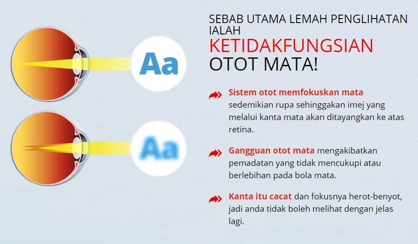
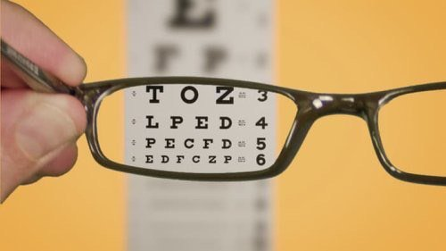
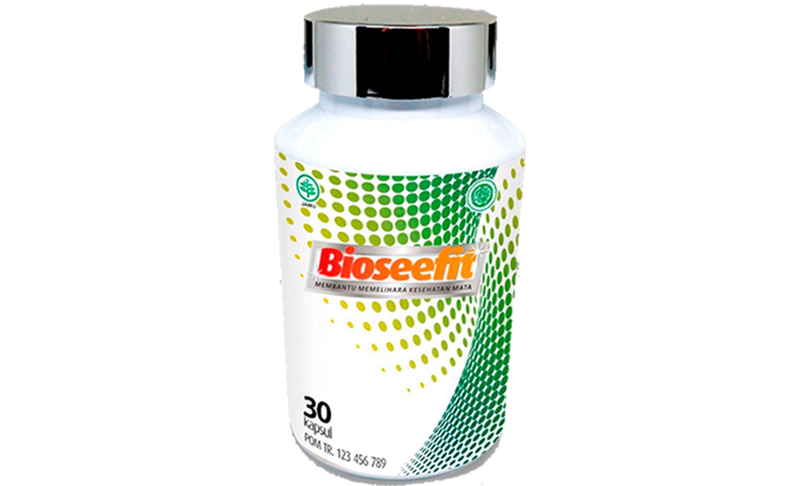

Mengobati indera penglihatan dengan laser tidak lagi diperluka
Menurut statistik, setiap orang ketiga memiliki masalah penglihatan. Menurut jajak pendapat tahun 2020, kebanyakan dari mereka tidak ingin meninggalkan lensa kontak dan kacamata secara permanen, tetapi tanpa harus menjalani operasi. Dan hari ini kita bisa membuat keinginan ini menjadi kenyataan!
Operasi mata: apa saja konsekuensinya
Mengobati indera penglihatan menggunakan laser merupakan momok yang menakutkan bagi banyak orang. Farah Azis Nurlia, seorang ahli independen di bidang oftalmologi, menjelaskan situasi ini dengan meningkatnya kejadian hasil negatif dari operasi pemulihan penglihatan.
“Pengobatan mata dengan cara ini menghabiskan banyak uang, sepuluh atau bahkan lima belas kali lipat biaya hidup. Untuk mencari perawatan alternatif, orang mencari pilihan anggaran, yang menjadi klinik yang lebih terjangkau dengan peralatan yang ketinggalan jaman.
Statistik WHO melaporkan bahwa sekitar 45 juta orang di negara kita memiliki masalah penglihatan. Dan hanya 11% dari mereka yang mampu membayar perawatan mahal, termasuk koreksi laser.
Pasien yang menderita minus 5-7 pada penglihatan mereka setelah operasi kerap masih mengeluh kepada saya. Sayangnya, dalam kasus seperti itu tidak mungkin lagi memulihkan penglihatan alami. Selama sisa hidup mereka, orang-orang ini akan dipaksa memakai kacamata dengan lensa besar. ”
 Operasi pemulihan penglihatan tidak selalu berakhir dengan baik
Cara tradisional untuk mendapatkan kembali penglihatan normal Anda
Ada banyak metode alternatif untuk memulihkan penglihatan. Ini termasuk senam mata, mengonsumsi buah dan sayuran dalam jumlah besar yang kaya vitamin A, B1, B2, B12, C dan lain-lain.
Bertentangan dengan kepercayaan populer, tidak mungkin mengembalikan kewaspadaan pada mata dengan cara ini. Alasannya adalah bahwa untuk mendapatkan persentase vitamin yang dibutuhkan dari makanan, Anda perlu makan produk segar dalam jumlah begitu banyak pada satu waktu sehingga perut seseorang tidak bisa memuat semua makanan itu.
Misalnya, 10 kilogram wortel atau 15 kilogram blueberry setiap hari. Selain itu, tidak semua vitamin diserap, karena ada sejumlah karakteristik dari setiap elemen yang harus diperhatikan saat mengkonsumsinya.
Jadi, riboforin (vitamin A) kurang berasimilasi pada orang yang merokok dan minum alkohol, serta dengan penurunan norma vitamin E dan seng dalam darah. Namun, pada orang sehat sekalipun, vitamin A hanya diserap jika dikonsumsi dengan lemak yang cukup.
Asupan vitamin murni dari apotek, sebagai aturan, memberikan efek sebaliknya dan menyebabkan hipovitaminosis, yang menyebabkan penurunan penglihatan.
 Hampir tidak mungkin mendapatkan vitamin yang cukup untuk penglihatan dari makanan.
Hampir tidak mungkin mendapatkan vitamin yang cukup untuk penglihatan dari makanan.
Metode pemulihan mata secara modern
Dokter mata terkemuka di Asia telah mengembangkan alat yang akan menggantikan koreksi laser dalam waktu dekat. Obat tersebut terdaftar di pasaran dengan nama dagan Bioseefit.
Selama tahun keberadaannya, obat ini telah membantu lebih dari 100 ribu orang untuk melepas kacamata mereka dan meninggalkan lensa selamanya. Ilmuwan telah menghabiskan lebih dari 7 tahun untuk pengembangannya. Butuh 4 tahun lagi untuk melakukan eksperimen klinis.
Efektivitas produk yang belum pernah terjadi sebelumnya ini disebabkan oleh komposisi yang tidak memiliki analog, yang meliputi ekstrak Lutein, Zeaxanthin, Vaccinium myristillus fructus.
Peran penting dalam pembuatan kapsul dimainkan dengan metode ekstraksi air dingin, yang memungkinkan untuk menjaga komposisi biokimia vitamin secara penuh.
ZAT AKTIF OBAT MAMPU MENINGKATKAN TINGKAT VITAMIN YANG DIPERLUKAN UNTUK VISI MENUJU TINGKAT SEHAT DALAM 2-4 MINGGU. SELAMA WAKTU INI, KESEIMBANGAN UNSUR JEJAK YANG BERTANGGUNG JAWAB TERHADAP AKUITAS VISUAL TERSEDIA
Ini mengarah pada stabilisasi alami tekanan mata, dan juga mengencangkan otot-otot mata, memperkuat retina dan menyelaraskan penglihatan dengan satu mata.
Di mana mendapatkan Bioseefit
Setelah 3 bulan, maksimal enam bulan kemudian, obat akan masuk ke rantai apotek. Sementara itu, Bioseefit dapat dibeli di situs web pemasok resmi..
Untuk mempopulerkan pemulihan penglihatan non-bedah di negara kami, pabrikan membiayai kampanye: saat memesan kursus Bioseefit sebelum diskon dijamin.
RP 1080000
13 komentar pembaca
Putri saya menggunakannya secara teratur. Saya sangat puas. Lensa sekarang menjadi bagian dari masa lalu ...
Kemarin saya mengambil paket dari Bioseefit. Dikirim dengan cepat, semuanya baik-baik saja. Saya sudah mulai mencoba.
Saya memiliki masalah dengan mata saya, saya telah minum Bioseefit untuk minggu kedua, dan penglihatan saya BENAR-BENAR membaik! Aku sangat senang! Ugh 3 kali)
Saya sudah memesan, sekarang saya tidak sabar menunggu paketnya datang :)
Selama seminggu sekarang saya telah mengonsumsi Kapsul dan penglihatan saya meningkat dari -4 menjadi - 2! Terima kasih banyak!!!!
Saya mengikuti perawatan dengan Bioseefit selama sebulan, dan penglihatan saya menjadi minus 1! Saya hanya tidak punya kata-kata!
Saya menggunakannya selama seminggu dan sudah mendapatkan hasil. Penglihatan meningkat secara signifikan! Saya mencoba untuk tidak memakai kacamata.
Saya berhasil meningkatkan penglihatan saya dengan produk ini dari -5 menjadi -2 dalam 4 minggu. Dan saya ingin meningkat lebih lagi. Benar, terkadang saya malas dan saya kangen atau lupa makan pil. Semua sama, kita harus mengepalkan keinginan dan menyelesaikan apa yang kita mulai)
Dan saya sama, saya selalu lupa minum pil. Tapi meski begitu, saya masih terbantu dengan Bioseefit ini karena penglihatan saya telah meningkat. Sebelumnya +1,5, sekarang 0,8.
Bioseefit benar-benar membantu memulihkan penglihatan saya! Aku sendiri bahkan tidak bisa mempercayainya !!! Kemarin saya memeriksa kacamata di salon, penglihatan - SATU! Suamiku juga mulai minum Bioseefit, meski penglihatannya tidak seburuk milikku.
Teman-teman, saya harap kalian juga dapat merasakan kebahagiaan yang sama seperti saya. Saya bisa kembali melihat dalam 12 hari dari -2 menjadi 0,8. Terima kasih kepada pencipta produk tersebut. Semoga beruntung untuk semuanya!
Obatnya super, dan yang paling penting - sederhana dan cepat. Untuk minus 5, Kemarin saya pergi ke dokter mata - dia terkejut dengan hasilnya karena sekarang hanya minus 2.
Terima kasih atas artikelnya. Sangat membantu seperti biasa. Saya akan memesan.